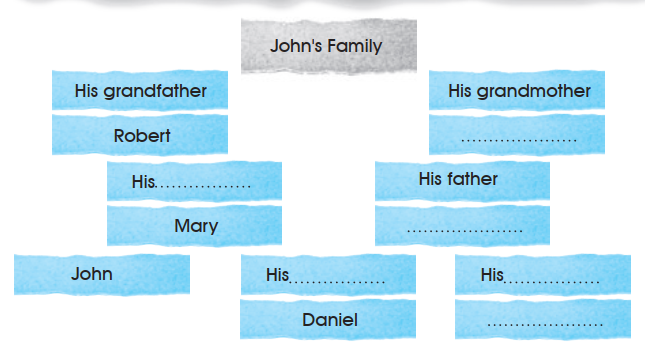
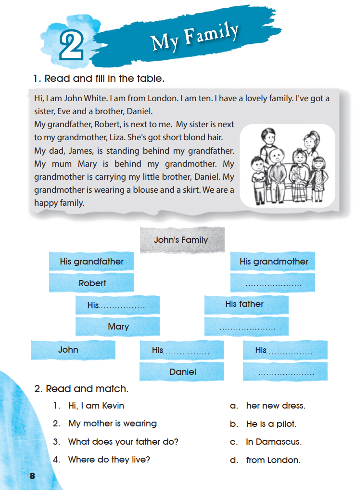
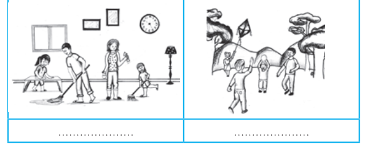
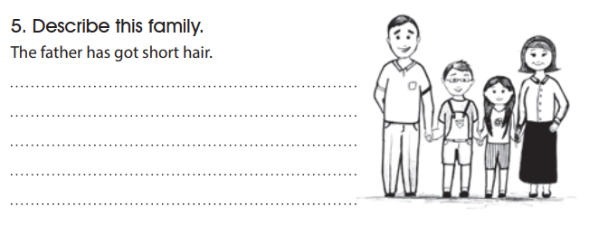
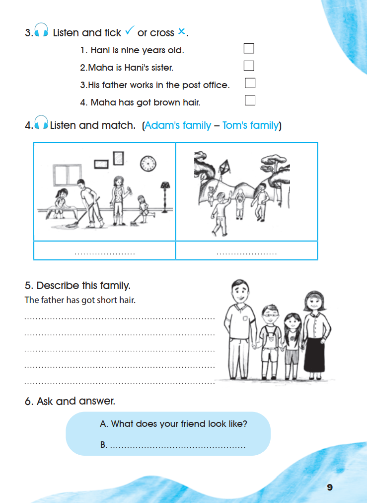
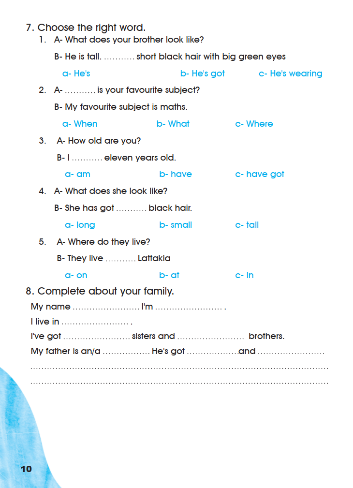

Workbook
Workbook · My Family · pages 8–10
Exercises 1–8 appear in their original order, on the pages where the book prints them. Listening instructions are kept as printed and marked when the recording is unavailable.
1. Read and fill in the table.
Hi, I am John White. I am from London. I am ten. I have a lovely family. I’ve got a sister, Eve and a brother, Daniel.
My grandfather, Robert, is next to me. My sister is next to my grandmother, Liza. She’s got short blond hair.
My dad, James, is standing behind my grandfather. My mum Mary is behind my grandmother. My grandmother is carrying my little brother, Daniel. My grandmother is wearing a blouse and a skirt. We are a happy family.
John’s Family
| His grandfather Robert |
His grandmother |
|
| His Mary |
His father |
|
| John |
His Daniel |
His |

Grandmother’s name: Liza · “His mother”: Mary · Father’s name: James · “His brother”: Daniel · “His sister”: Eve.
Every one of these is stated in the reading text. The book prints no key.
Open the source page · Workbook · p. 8
This is the original supplied image, shown without redrawing or generation.

2. Read and match.
3. Listen and tick ✓ or cross ×.
4. Listen and match. (Adam’s family – Tom’s family)

Only the two names in the exercise title are printed; the book does not show which picture belongs to which family.
5. Describe this family.
The father has got short hair. printed as the example

The book prints five dotted lines after the example sentence. Descriptions depend on what the learner sees in the drawing, so no answer is supplied.
Open the source page · Workbook · p. 9
This is the original supplied image, shown without redrawing or generation.

6. Ask and answer.
A. What does your friend look like?
B.
Speaking activity. Nothing is scored.
7. Choose the right word.
8. Complete about your family.
Open the source page · Workbook · p. 10
This is the original supplied image, shown without redrawing or generation.
